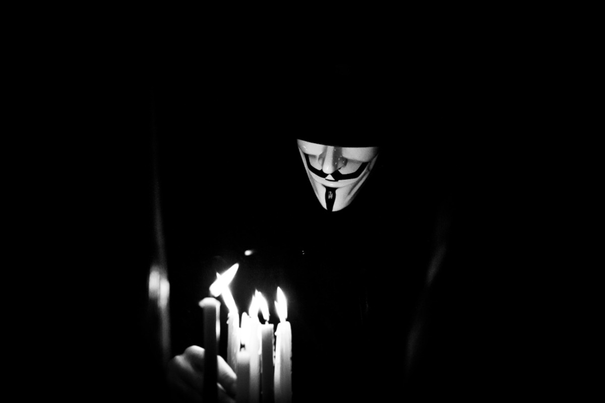
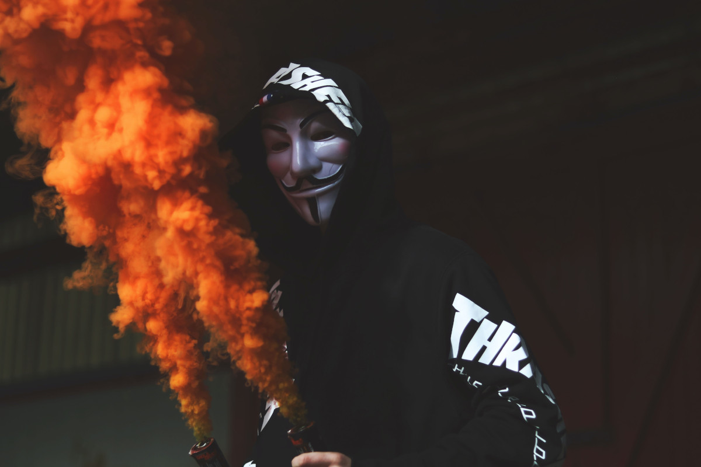

About Us
Por não ter uma organização hierárquica definida, pode ser um pouco confuso explicar sua origem, mas as características que definem o grupo dizem muito sobre eles.
O grupo, que é composto por uma rede internacional, minimamente organizada de hacktivistas, que teve sua raiz nos quadro de avisos baseado em imagens online 4chan. O site começou em 2003 e é usado por pessoas em todo o mundo.
- 
- 